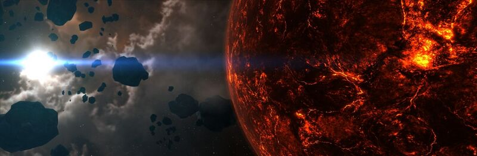

When it comes to longtime supporters and old friends, Rhavas is one that I count among them. Though we’ve never shared experiences in game and have only known each other through the community and meta gaming, I believe his mindset and heart for exploration is similar to my own. It seems he’s got a knack for unknowingly encouraging me at just the right moments. More than once when I’ve doubted myself or my goal and wondered if anyone was even listening, Rhavas Tweets a simple comment or reTweets a blog post of mine. In so many ways, it’s a minor act, a simple thing, but it’s that support that has a huge impact and nudges me on. I’ve never said it directly or publicly, so I will now — Thank you Rhavas, your encouragement means a lot.
When I returned to EVE recently and was going through my old EVE mail, I had to laugh when I found a message from Rhavas that said Katia was mentioned in his will and he had left the game. Which on the 27th of June 2014 it will be exactly three years ago to the day. I had submitted an image to EON Magazine that was published (Issue #25, Postcards from the edge #2), as a tribute and farewell to Rhavas. The image is pictured above. The entry read as follows:
Rarely do New Eden’s elite have to face up to the reality of death, even when they themselves might be guilty of terminating dozens of lives with each ship they destroy. In this instance, a capsuleer takes a slow orbit around the plasma world of Jolia III during a period of quiet contemplation, having learnt of the loss of a close personal friend to a clone transfer accident. It is hoped the consciousness of the pilot will be able to be revived in the future.
From Katia’s perspective he had encountered a mishap and was forever “dead” so to speak. I laugh because now I have to explain his return in Katia’s mind and show her reaction. Which I plan to do so IC’ly (in character) in an upcoming blog story. It’s nothing big, lol, but it’s what we roleplayers do after all.
What attracted you to EVE Online and how long have you played?
Rhavas
I came for the spaceships! I’m very long-time sci fi fan and had heard a lot of intriguing things about EVE. I’ve been playing off and on since 2010 – I started right as Dominion was finishing and Tyrranis was getting ready to launch. I really wanted to be a smuggler, flying things past and around blockades for fame and fortune. Seeing there was even a ship called a “blockade runner” convinced me to sign up for a trial. Reading about the awesomeness of the (then famed) nano Vagabond made me go Minmatar.
How would you describe your characters career path?
As I mentioned, I wanted to be a smuggler. Then of course I found out that blockade runners aren’t actually for smuggling contraband and people don’t really pay – or recognize – smugglers that way in EVE. But cloaking did in fact look like the real deal, so I went straight for a CovOps. I also quickly realized that without a corp, the game would be very dull. I think I spent 10 minutes on mining. I saw a good ad and signed up for a little startup PVP corp called Lupus Vires, which was fun for a brief time but then imploded when its leadership idled out. From there I decided I needed a teaching corp that wasn’t as prone to failscade, so I joined EVE University for about 5 months, where I learned the ropes and met many of the people I still fly with today.
My E-UNI buddies split mostly three ways when we graduated – some “serious PVP” guys went to Agony Unleashed, a few others formed the wormhole corp Future Corps (including their founder, CSM 8 member James Arget), and a handful of us decided to follow E-UNI FC Sto Lo into lowsec in a group called The Corporation of Noble Sentiments, who later linked with Future Corps to form the Sleeper Social Club alliance. We had a blast in lowsec but the sec status mechanics at the time were brutal, requiring more time to rat sec status than play the fun parts of the game. Coupled with some disappointments I had around the Arek’Jaalan project, I quit for about 8 months and while I was away, Noble Sentiments folded and rolled into Razor Alliance in sov nullsec.
When I came back I knew I didn’t want to be in sov nullsec, so I joined the Future Corps guys and have been there ever since. I really enjoy wormhole life – and it matches really nicely to the exploration niche I found for myself.
What attracted you to explore New Eden? What is your goal and have you achieved it? If not, are you still working towards your goal, do plan to continue, or what are you currently doing?
Very early in my career – even before joining my first corp – I started my blog Interstellar Privateer. I didn’t have brilliant PVP expertise or brilliant game insight or fight stories to tell, so I started it as mostly a creative outlet for myself; the bulk of my early writing is fiction. This played out especially well because it forced me to learn the lore.
While exploring that lore I learned about the Seyllin Incident and was fascinated by it. I decided to make Isogen-5, the shattered planets and wormhole lore my “thing” since it looked like there wasn’t much established expertise on that lore. That led me to kick off my goal of visiting every shattered planet in EVE, along with most of the worlds connected to the Seyllin Incident events.
The shattered planets are spread all over New Eden, which led me a journey of hundreds of jumps, especially when I added in additional sites of interest that linked to the Seyllin Incident story. The whole writeup is in the Shattered Datacore on my site and in the end it led to me joining Arek’Jaalan, writing the Evelopedia page for the shattered planets, and starting two exploration efforts. Unfortunately those efforts, Project Tesseract (investigation of and hunt for Isogen-5 in the game and attempt to recreate the Seyllin Event) and Project Catapult (hunt for Sansha Kuvakei’s wormhole-generating mothership) both died when Arek’Jaalan closed up and CCP essentially disavowed it.
What is the name of your favorite ship that you enjoy flying the most while exploring? Why is it your favorite? Would you mind sharing your fit?
I still fly my very first, original CovOps from 2010, Wraith (a Cheetah) as my primary exploration ship. She has seen me through thick and thin and while I’ve often been bubbled I’ve never been caught. Her fit changed a lot with the introduction of Odyssey and my move from exploring new systems to probing for wormhole signatures. I used to use her as a scout as well but these days I’m more likely to use a cloaky Proteus for that duty in wormholes.
Right now she’s rigged primarily for probing but with a bit of scouting and a bit of comedy on the side.
[Cheetah, Wraith]
High Power
1x Covert Ops Cloaking Device II
1x Sisters Expanded Probe Launcher (RSS Core Scanner Probes)
1x Festival Launcher (Copper Firework CXIV)
Medium power
2x Scan Rangefinding Array II
1x Scan Pinpointing Array II
1x Scan Acquisition Array II
Low power
1x Quantum Co-Processor I
2x Nanofiber Internal Structure II
Rig Slot
1x Small Polycarbon Engine Housing I
1x Small Gravity Capacitor Upgrade II
Cargo
Ammo (RF Phased Plasma S, snowballs, fireworks and Sisters combat probes)
Hero Tackle Re-Fit Components (Mobile Depot, Micro Auxiliary Power Core, Cap Recharger II, 200mm Autocannon II, Limited 1MN Microwarpdrive, Warp Disruptor II)
During your research and travels, what has been the most interesting fact, amazing sight, or other aspect of New Eden that surprised you?
Wow, there’s so many to choose from. Here is a selection of “mosts” instead.
Most impressive: The first time I laid eyes on the lone Class 5 Wormhole shattered planet (J115422 I). While I had seen all of the others already, this one was special – it had taken many months to find and in the end we risked several people on the word of a wormhole corp we didn’t know just to get a chance to look – and we were not disappointed by how bright and hot it looked. (Related linked post: “The Hidden Fire”)
Most amazing discovery: The discrepancy between the actual number of shattered planets in game when compared to the lore and the Apocrypha trailer – they don’t match, which gave me a whole new direction to explore. (Related linked post: “CONCORD’s Fine Print”)
Biggest disappointment: The EVE Gate – while pretty it was sort of anticlimactic. Everyone should go there on a pilgrimage, but if there was one piece of background art I think CCP could do even more with it would be that. It’s pretty much a Cataclysmic Variable background in k-space. I wanted to see the Gate itself! (Related linked posts: “Gates” and “Synchronicity”)
Best experience: Time spent in the now-defunct Arek-Jaalan program – a truly groundbreaking effort where we turned our exploration into real in-game research that culminated in an entire new site in space with all of our names and research on documents people can collect (go visit Antiquus in Eram to see it and collect your Project Tesseract and Project Catapult souvenirs!). (Related linked post: “Antiquus”)
What have you learned or what advice would you give to someone interested in exploring New Eden?
CovOps, CovOps, CovOps. Get a cloaky, flexible ship. For some uses and higher skillpoints, a cloaky nullified Tech3 cruiser is even better. Don’t panic when you’re caught in a bubble – zoom out, find a gap, align-MWD-cloak. As an explorer, you need to swallow your fear of loss and just go find things. Read the sites of the people Katia is profiling, especially Mark726’s EVE Travel, and go get a feel for it.
Do you have a favorite image that you wouldn’t mind me posting and sharing from your explorations?
This picture of J115422 I (noted above) has always been one of my favorites. 
World on Fire
Comments
"Thanks for the profile, Katia, and the kind words. I’ve always enjoyed following your travels and the great pictures you get (I know it’s harder than it looks!).
Since that first quit I’ve taken two other breaks – it seemed so final then. EVE is a hard one to just walk away from. Keep on doing what you do!" - Rhavas
{kind=link}
{kind=link}
{kind=link}
{kind=link}
{kind=link}